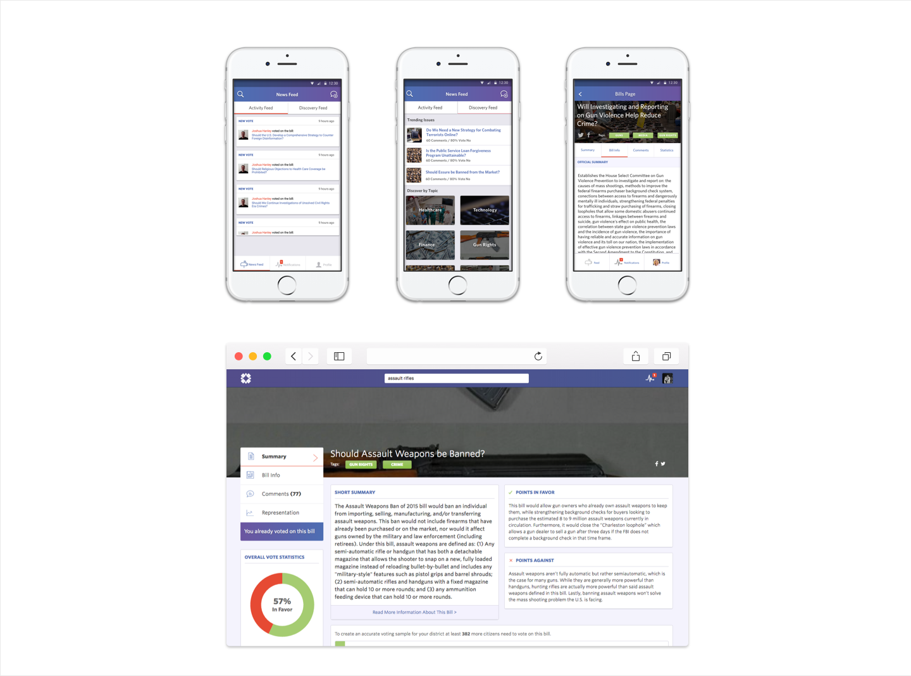
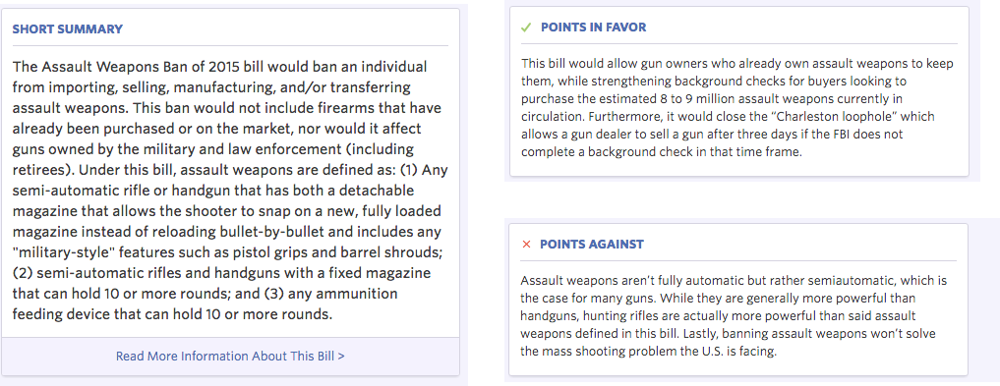
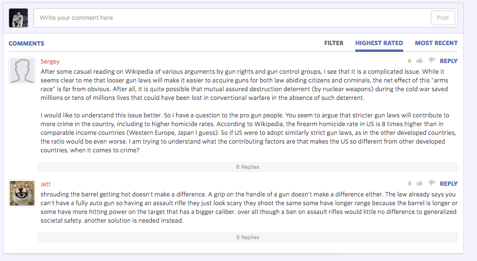
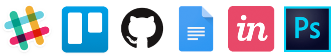
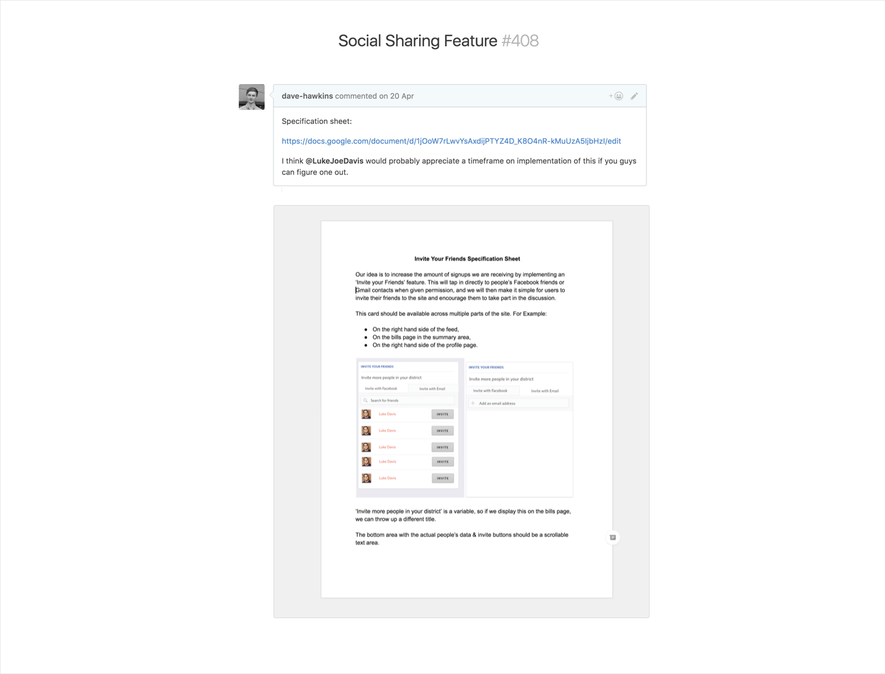

I led the design and development of Placeavote’s platform full-time from July 2015 across the web, Android & iOS platforms. I was responsible for the vision, look and user experience of the product.
Insights
I partnered with one other designer and set out to uncover the wants and needs of the project. Together, we gathered stakeholder interviews, created personas and even branded the company - this was all left to our design team of two people.

Strategy & Vision
I created a product roadmap, implemented project management systems across the team and created a structure of sprints that all teams could work in (loosely based on agile two week sprints across the Backend, Frontend and design team work).
Oversight
I helped teams across the board implement our vision, from the Frontend, Backend, Mobile & Content teams I led our efforts to make the service simple, accessible and enjoyable to the end user. I sourced and hired lead and junior developers in each corner of the business and onboarded those people into the company.
The Challenge
Create a better Democracy for America
America is more disenfranchised with its politicians than ever before. We started this journey before the presidential race of 2016 with a key view to releasing our software in one of the most important elections in U.S history.
The idea was simple: let constituents read about bills that have been put before congress, debate them and then vote on that legislation. This information was then proxied to their congressman.
During the initial stages of Placeavote’s formation we ran a user research sprint. From this we gained interest from congressmen who wanted to know how to vote on potential legislation, and we had users interested in having that direct line to their representative. All we needed was to tie the two together.
The Approach
Our seed funding was secured in July 2015 and our platform was set to launch in December of that year.
We set out planning and decided upon the Agile methodology which is based on a system of two week bursts of work designed to tackle new features or UX issues. Our design team used this methodology and in our first two sprints we created a brand identity for Placeavote for the first time in its existence.
The Preparation
Building a product of this size required careful preparation.
Our design team wanted to deliver an exciting product for launch, with scope to build upon and develop post-launch based on user feedback.
We set features into two categories: ‘Must have for launch’ and ‘Must have post-launch’. This meant that we could lower the scope of building our product's beta to just the core services initially, and make sure that our platform had enough time to grow and evolve.
The Product
Hello, PlaceAVote

"Placeavote is a nonpartisan platform that gives you the opportunity to read, debate, and vote on every bill that is presented before Congress."
Feature: Read
User feedback on an early iteration of Placeavote showed that the information given to us by congress was not sufficient enough to let the user vote on legislation with confidence. To fix this we hired a team of content writers, we put accessible and easy to digest information on bills at the forefront of what we were doing and we watched as voters were able to weigh in with a new confidence.

An example of our curated bill content, based on the original bill entitled:
To regulate assault weapons, to ensure that the right to keep and bear arms is not unlimited, and for other purposes.
Feature: Debate
Some of the most engaging parts of the site came from debates between users. As issues such as the second amendment continued to divide the country, users were able to weigh in on both sides of the argument and a lot of interesting discussions were sparked.
In order to encourage this engagement, we chose Reddit as our inspiration behind the comment system. Its use of threaded comments, upvotes and downvotes are tantamount to creating an interactive experience. We also put the top user comments on our legislation page, as comments that often found their way to the top became increasingly useful information to potential voters.

An example of our comments system working on the bill: Should Assault Weapons be Banned?
Feature: Vote
Our voting experience was far from perfect - from the launch it was a difficult challenge. User testing showed us that after the first vote on the site there was little incentive for a user to vote on other issues.
As an example; 50% of our users at one point dropped off as soon as their first vote was made, and tests showed that people were not presented with sufficient information after they made their vote - they either wanted to know what happened to that vote, or they wanted to quickly move onto the next subject. We tested new ways of engaging people on this screen as seen below:
One of the many prototypes we created to enhance the ‘voting’ experience of PlaceAVote.
Currently
Our latest iterations have tied the site to census data, to show statistical relevance to both constituents and representatives.
Over the coming months we are moving towards connecting you with your representative even further by adding in charts that show how many more votes we need to reach your congressman and gamifying the site in a way that makes it more enjoyable to vote and debate on subjects.
How We Designed
Through constant iteration and continuous feedback, we developed Placeavote from being simply an aggregator of congress APIs and data into a site that made it simple to engage on a bill, and actionable enough for people to vote on issues.
On the technical side, we made prototypes in Principle made to make it easy for us to get across our specifications. We also created Style Guides for Frontend teams to use, making sure that our specifications could be met as easily as possible by the person dealing with styling all of our new features.

Above, examples of our prototypes and style guides in action
How We Communicated
When I first joined this project we were given a blank canvas. We were a remote team with people based all over the globe and it was up to us to come up with our own ways of working. It was largely down to myself to implement company processes for things like hiring, product management, QA, development and design handoff.
We settled on tools like Slack, Trello, Github & Google Docs to handle product management and code releases, while InVision and Photoshop were our main tools when it came to design.

Our main remote toolkit
Each new sprint and development feature came with a full breakdown of specifications created by myself in a Google Doc, with user journeys and stories telling the developers the meaning of the new feature and where it fitted into the current ecosystem. This allowed our need for asynchronous communication to be at a minimum, which was very important as our team was often split across 4 time zones.

The Impact
Placeavote went into Beta at the start of January 2016 (around 3 weeks behind schedule) and as stated before our initial feedback was that the site was usable, with a logical flow for users. Our only problem was that the content simply was not easy enough for people to digest which made it hard for people to make an informed decision on their vote.
We solved this by curating bills ourselves, focusing on ones that had made news outlets recently or ones that our researchers believed deserved more of a voice and were important to the American people. By remaining nonpartisan we tried to satisfy voters on both sides of the aisle and we put out reasons to vote for and against.
By April 2016 we had a product that could go to market and Luke Davis, our CEO, decided to launch us at TechCrunch Disrupt in front of the world’s tech press, his speech and his breakdown focusing on how we could disrupt the billion dollar industry of Political Polling. Our user base has grown ever since.
Placeavote CEO Luke Davis speaking at TechCrunch Disrupt
Reflections
User Feedback is Critical, Every step of the way
We based our beta program largely on the needs of our stakeholders as well as our own user stories; we believed that by putting these methods at the front we would still come out with a product that focused on the user experience.
Content is King, long live content
We originally believed that people would be able to spend the time sifting through untouched congressional information and still be able to make an informed vote. This was absolutely not the case and one of the biggest successes for us came when we employed a content team and set out testing new ways of informing voters.
In hindsight, it would have been much better for us to involve potential users at an even earlier stage: in creating a simple paper wireframe of the site and its content we could have come out with a much better beta program.
We corrected these mistakes in beta and our product has only gone from strength to strength since.
Upon reflection, I believe the greatest move we made at Placeavote was employing a content team after our initial round of feedback, and moving the site to a curated aggregator of bills as opposed to an aggregator of data and legislation.
This would have been a big and risky move without user feedback, but we knew as soon as our initial round was through that making this move would really engage voters as opposed to turn them off. Our hardest job was finding the right people to come in and curate these bills for us, and give them the right tools in order for them to respond to events happening in congress.
We were lucky to hire the right people, and our second round of testing found that users were completely able to make informed decisions on their vote, which was an immensely satisfying thing to watch after making such a big decision to hire more people to our small team.
The content we curated lead to huge increases in people sharing our content with others, and made signups increase ten-fold as new bills were added to the site that really spoke to certain audiences - legislation on subjects like ESSure, GMO Labelling & Prescription drugs had a huge impact on the site.
Today, thousands of people are using Placeavote to bring real change to their districts and ultimately their country, and as we move forward I look forward to being involved in the evolution of this platform. What started as a few people sat around a Skype call talking about their crazy idea has grown into a platform that can incite real change in a country.